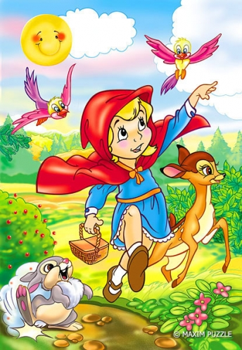

Žilo jednou jedno děvčátko a to dostalo od babičky k narozeninám dárek – červenou čepičku. Rádo ji nosilo, a proto jí říkali Červená karkulka. Babička bydlela za lesem a Karkulka ji často navštěvovala. Jednoho dne měla i babička narozeniny a maminka k ní Karkulku poslala s košíčkem, ve kterém byla
Děvčátko muselo projít hlubokým lesem, a proto jí maminka přikazovala: „Jdi rovnou k babičce, Karkulko, a nikde se nezdržuj a nescházej z cesty. Mohlo by se ti něco zlého přihodit.“
Karkulka to slíbila, ale na svůj slib brzy zapomněla. Jakmile uviděla rozkvetlé lesní květy, začala je pro
babičku sbírat do kytičky. V hlubokém lese žil také zlý vlk. Karkulku zahlédl a začal ji zpoza stromů
sledovat. Po chvíli jí nadběhl, vynořil se před ní a ptal se:
„Kam jdeš, Karkulko?“
„K babičce,“ odpověděla Karkulka. „Nesu jí k narozeninám košíček plný dárků. Bydlí v chaloupce za
tímhle lesem.“
Vlk se podíval do svého diáře, a když zjistil, že má celé odpoledne volno, rozběhl se k babiččině chaloupce, aby tam byl dřív než Karkulka. Zaklepal na dveře. „Kdo to klepe?“ ptala se babička. „To jsem já, Karkulka. Jdu ti popřát hezké narozeniny a nesu dárky,“ odpověděl jí vlk tenkým hláskem. Babička si myslela, že je to opravdu Karkulka. Pustila vlka do chaloupky a ten ji spolkl. Potom si nasadil na čumák brýle, na hlavu babiččin čepec a vlezl si do postele.
Karkulka zatím doběhla k babiččině chaloupce. Vešla dovnitř, podívala se na vlka ležícího v posteli a podivila se: „Babičko, ty máš ale velké uši.“ „To abych tě lépe slyšela,“ řekl vlk. „Ty máš ale velké oči, babičko,“ podivila se zase Karkulka a vlk odpověděl: „To abych tě lépe viděla.“ „Ty máš ale velkou pusu, babičko,“ podivila se Karkulka a vlk zařval: „To abych tě mohl lépe sníst!“ Pak otevřel svoji tlamu a Karkulku spolkl taky. A jak měl plné břicho, svalil se zpátky do postele a tvrdě usnul.
Brzy šel kolem hajný, který při svých pochůzkách lesem vždy babičku navštívil…
Než ale dovyprávíme naší pohádku, dáme si malou anketu: